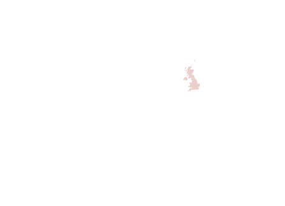

Über uns
Mehlig steht für höchste Fensterkompetenz im exklusiven, internationalen Villenbau. Das Familienunternehmen wurde 1946 gegründet und ist spezialisiert auf besonders anspruchsvolle Projekte für Architekten und Bauherren mit außergewöhnlichen Anforderungen an die Gestaltungs-, Beratungs-, Produkt- und Servicequalität rund um den Themenkomplex Architektur und Fenstertechnologie. Erworben hat sich Mehlig seine führende Stellung im Markt in zahlreichen gemeinsamen Projekten mit international bekannten Architekten und als Erfinder innovativer Fenstersysteme wie der »Sprosse 22« – eine schöne, stilsichere und hochfunktionale Fensterkonstruktion, die viele Häuser vor der Kaputtsanierung rettete.
Das perfekte Miteinander von
Schönheit und Technologie
Wie wird eine norddeutsche Tischlerei zur internationalen Marke?
WM: Wir wollten immer das Besondere: gemeinsam mit Architekten etwas Einmaliges schaffen und für jedes Projekt das ideale Mischungsverhältnis von Technologie und Schönheit ausloten – das treibt uns an. Der exklusive Villenbau passt deshalb perfekt zu uns.
Was bedeutet »Schönheit« in diesem Zusammenhang?
WM: Fenster waren früher Statussymbole und Ausdruck guten Geschmacks. Im letzten Jahrhundert wurde das häufig vergessen – Mehlig hat daraufhin die Sprosse 22 entwickelt und schützen lassen: eine schöne, stilsichere und hochfunktionale Fensterkonstruktion für Modernisierungen im Einklang mit dem Denkmalschutz.
Was kann ich als Architekt und Bauherr von Mehlig erwarten?
WM: Ein konkurrenzloses Leistungspaket aus einer Hand – Beratung, Werkplanung, Produkt, Montage und Service für exklusive Villen an jedem Ort der Welt. Als Bauherr bekomme ich Fenster und Türen, die über Generationen schön, funktional und wertstabil bleiben.
Mit welchen Architekten hat Mehlig gearbeitet?
WM: Stellvertretend: Robert Stern, Frank O. Gehry, David Chipperfield, Gerkan Marg und Partner, Francis Terry, Sebastian Treese, Ulrike Krages, Hans Kollhoff, Allan Shope sowie Randall Stofft und John Cooney.
Internationale Projekte
Tippe auf ein Land, um die Projekte dort zu sehen.


von Amerika 908Deutschland 39Russland 36England 34Frankreich 21Schweiz 53Spanien 5Monaco 12Spanische Inseln 17Karibische Inseln
Firmenhistorie
- 1946Gründung der Tischlerei Mehlig
- 1979Neuer Geschäftsführer: Wilhelm Mehlig
- 1980Entwicklung der renommierten Sprosse 22
- 1985Erste Projekte in den USA
- 2004Eröffnung der neuen Manufaktur
- 2006Erste Projekte in Russland
- 2017Erweiterung der Produktion
- 2019Einführung der Produktlinie LIGNUM SECURE